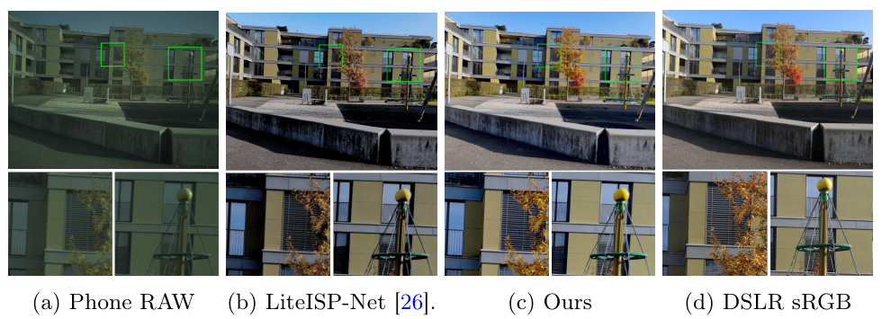
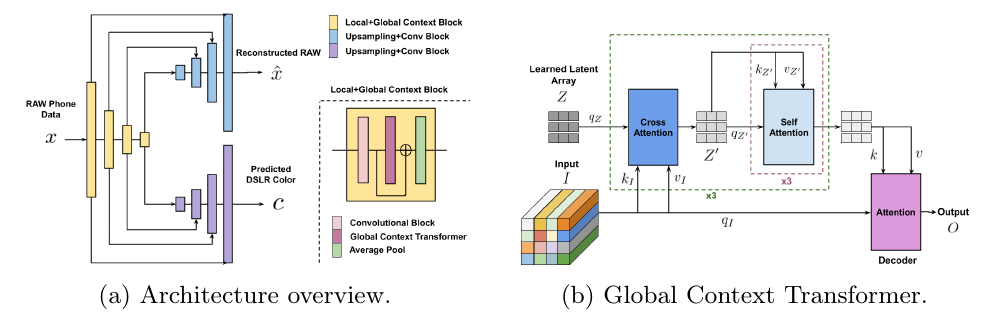
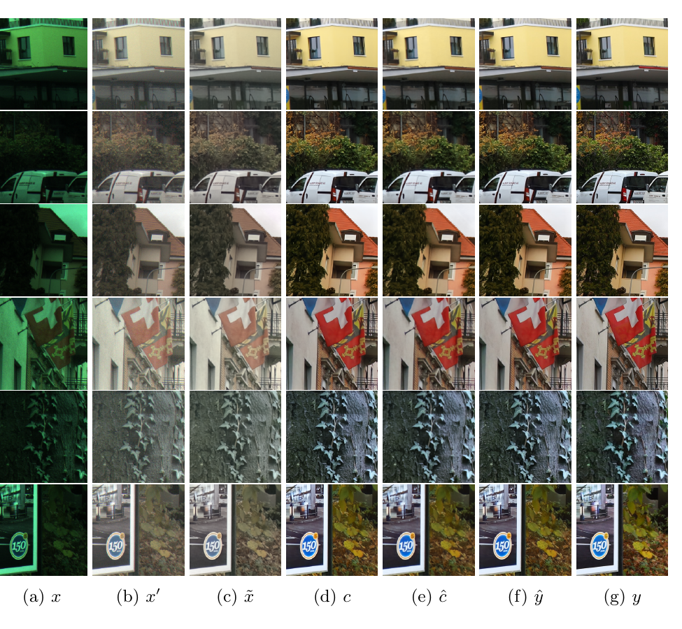
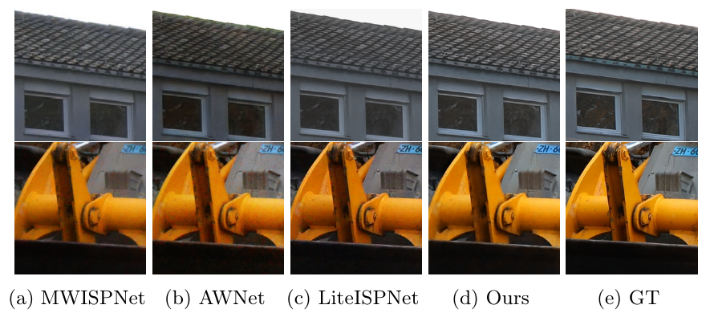
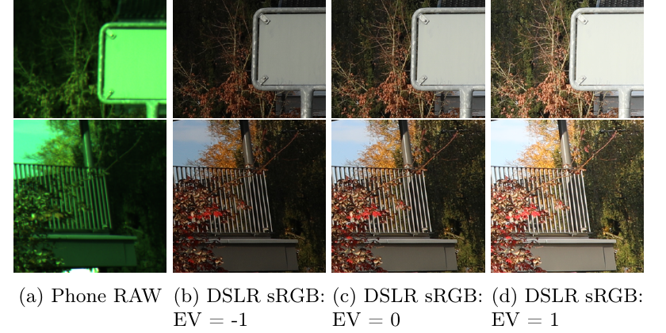

Transform your Smartphone into a DSLR Camera: Learning the ISP in the Wild
⚠️ 代码说明：官方仓库 4rdhendu/TransformPhone2DSLR 只有一个 commit（5ec1574 Dataset link added），内容是 README 和 overview.png，README 写着 "Code will be released soon"，至今（2026-10-20）没有任何代码。另外查过 arXiv 摘要页、论文正文（正文写 "The code would be released upon publication"）、GitHub 搜索（"ISPW"、"learning the ISP in the wild"），都没有找到第三方复现。因此本页的代码分两类：(1) repo-liteisp/… 和 repo-deepburstsr/… 是本文直接对标或沿用的前作官方代码（LiteISPNet：cszhilu1998/RAW-to-sRGB @ b9e3854；DeepBurstSR：goutamgmb/deep-burst-sr @ 16f158e），逐字引用，不是本文的代码；(2) 本文自己的颜色映射和掩码损失，按论文 Eq. (3)–(9) 写成带标注的等价伪代码。

问题
手机 RAW 和单反 sRGB 来自两台机器：(1) 每一对之间的颜色映射都不一样，取决于相机参数、光照这些没被观测到的因素；(2) 视场、视差、物体运动造成空间错位。普通的前馈 ISP 网络只能学到「平均颜色」，画面发灰。
拆分
把 ISP 写成 F(x, ĉ)：颜色由条件 ĉ 提供，F 只管去噪、去马赛克和细节。训练时 ĉ 由逐图拟合的低自由度颜色映射 C 从 GT 得到，推理时由颜色预测器 G(x) 给出。
监督
用 PWC-Net 光流把 GT 对齐到预测上，再用前后向一致性掩码扔掉流不可靠的区域（遮挡、重复纹理、平坦区），掩码这一项单独带来 +0.62 dB。
数据
ISPW：华为 Mate 30 Pro RAW（4×1368×1824）配 Canon 5D Mark IV 的三档曝光 sRGB（EV −1/0/+1），共 200 组，切成 2.8 万多个 320×320 crop。单反侧没有 RAW。
1. 出发点 (Motivation)
学习式 ISP 的基本设定是：输入手机传感器的 Bayer RAW，输出「像单反拍的」sRGB。监督来自同一场景下另一台高端相机拍的照片（PyNET 的 ZRR 数据集是华为 P20 → Canon 5D IV）。作者指出，这个任务和一般的增强、复原任务比有两个根本差别 [§1]：
- 颜色映射不是固定函数。 从手机 RAW 到单反 sRGB 的颜色变换取决于两台相机各自的白平衡、曝光、picture style，以及光源光谱等环境因素，每次拍摄都不同，而这些量在 RAW 里大多观测不到。所以 \(y = \mathcal F(x)\) 这样的单一前馈网络找不到一个对所有样本都对的全局颜色映射，结果就是学成平均色。消融里的 NoColorPred 正是这个现象，作者形容它 "learns average and dull colors" [§5.1]。
- 配对数据天生没对齐。 两台机器的视场不同，有视差，场景里的物体也会动。直接用像素 L1 训练会得到模糊、偏色的结果（Fig. 4）。
前作对这两点各有处理。LiteISPNet 在训练时用 GCM 把手机 RAW 调成单反的颜色、再用光流对齐 GT，但推理时网络仍然要自己猜颜色；DeepBurstSR 用一个 3×3 颜色矩阵在评测时对齐颜色。本文的做法更彻底：颜色在训练和推理时都作为显式条件输入，让 ISP 网络完全不负责猜颜色。这种「颜色 / 细节分离」的结构正是本专项（iPhone → 目标相机的细节和质感迁移）最关心的部分。
ISP
Image Signal Processor，相机里把传感器 RAW 变成 sRGB 照片的处理链：去马赛克、降噪、白平衡、色彩校正、色调曲线等。
Bayer RAW (4 通道)
传感器每个像素只记录一种颜色，按 RGGB 排列。把每个 2×2 块拆成 R、G1、G2、B 四个通道，就得到一张 4×H/2×W/2 的 packed RAW。
弱配对 (weakly paired)
输入和监督拍的是同一场景，但来自不同相机，像素不对齐、颜色也不一致，不能直接逐像素比较。
PWC-Net / 光流
为两张图里的每个像素估计一个位移向量，用它把一张图「扭」（warp）到另一张图的坐标上。本文用预训练好的 PWC-Net。
前后向一致性
先算 A→B 的光流，再算 B→A 的光流，两者在正确的地方应该互相抵消；抵消不了的像素就说明流不可靠，常见于遮挡区域。
RRDB
ESRGAN 里的残差套残差稠密块，常用作超分和复原网络的主干。本文的 ISP 网络 F 由 8 个 RRDB 组成。
Perceiver 式交叉注意力
不让所有像素两两做注意力，而是先用一小组可学习的 latent token 去「读」整张特征图，再在 latent 上做自注意力。计算量对像素数是线性的，也能处理任意尺寸的输入。
ZRR
Zurich RAW-to-RGB 数据集（PyNET，CVPRW 2020）：华为 P20 的 RAW 配 Canon 5D Mark IV 照片，是这个方向的标准基准。
2. 方法 (Method)

| 组件 | 起点 | 消融方向 | 最终选择 | 为什么 |
|---|---|---|---|---|
| 颜色来源 | 无条件 F(x)（NoColorPred, 21.27） | 模糊 GT 当条件（ColorBlur, 23.43）/ 颜色映射 | 逐图参数化颜色映射 C | ColorBlur 在颜色突变的轮廓处出错；C 是低自由度的全局映射，只搬颜色、不搬细节，所以 F 没法偷看 GT |
| 映射形式 | 3×3 线性矩阵（LinearMap, 21.89） | 每 bin 常数（ConstValMap, 22.65）→ 每 bin 仿射、通道独立（23.78）→ 跨通道仿射（24.41） | 每 bin 跨通道仿射 AffineMapDep | 3×3 矩阵表达不了色调曲线和对比度；每个 bin 一个仿射，用很少的 bin 就有足够的表达力 |
| 映射的输入 | 处理后的 RAW \(x'\) | + 去噪预处理网络 P | \(\tilde x = x' - \eta(x')\) | 噪声会让最小二乘拟合出错，加 P 后 +0.83 dB（24.41→25.24） |
| 颜色预测器 | 纯 U-Net（24.09） | + RAW 重建分支（24.43）+ 全局上下文 Transformer（25.24） | 三者全加 | 颜色需要全局一致（同一面墙远近两处颜色应相同）；重建分支迫使编码器保留手机特有的信息 |
| 监督对齐 | 不对齐 L1（20.56） | + 光流对齐（24.62）+ 一致性掩码（25.24） | 对齐 + 掩码 | 光流在遮挡、重复纹理、平坦区不可靠，错的监督会带来偏色和细节损失 |
| 训练方式 | 独立训 F 和 G（25.24） | 联合微调（25.27） | 独立训练 | 联合只多 0.03 dB；独立训练可以用更大的 batch，训练也更快（App. Tab. 5） |
2.1 颜色条件 ISP 网络 F
核心变化只有一处：ISP 网络多了一个颜色条件 [§3.1]。
—— 翻译: 网络同时看两样东西，一是手机 RAW $x$（细节、噪声、马赛克都在里面），二是一张半分辨率的「目标颜色草图」$\hat c$（告诉它最后应该是什么颜色）。输出是两倍分辨率的 sRGB。颜色已经有人给了，网络只需要把细节做好。
结构见附录 B.1：把 4 通道 RAW 和 3 通道 \(\hat c\) 在通道维拼成 7 通道，经过 1 个卷积、8 个 RRDB，再做最近邻上采样 + 卷积 + LeakyReLU，输出 \(H \times W \times 3\)。这个网络很朴素，没有全局池化，也没有大感受野的 U-Net，全局信息全部通过 \(\hat c\) 输入。
类比：可以把 F 看成一个只负责「描线和上细节」的画师，调色板由另一个人（G 或 C）准备好放在旁边。画师不需要知道这张画应该是暖调还是冷调。
2.2 颜色映射模块 C：逐图拟合的分 bin 仿射映射
这是本文最有意思的部分 [§3.3]。目标是构造一个函数 \(\hat c = \mathcal C(\tilde x, c)\)，它从单独一对 \((\tilde x, c)\) 里学出颜色变换，再把这个变换作用到 \(\tilde x\) 上。
先把 RAW 处理成一张粗略可看的图。 \(x' = \Gamma(x)\)：丢掉一个绿色通道，每个通道按最大值归一化，再做 \(1/2.2\) 的 gamma（附录 Eq. 10–12）：
—— 翻译: R、G、B 三个通道各除以自己的最大值，但分母设了下限（R 是 1/2.5，B 是 1/1.4），所以暗图不会被硬拉亮。这些下限相当于一组固定的粗白平衡增益，作者说是「对数据做定量评估后定的」。最后做 gamma 把线性信号压到接近感知均匀的空间，让后面的颜色映射更接近线性。
然后用预处理网络 \(\mathcal P\) 去噪：\(\tilde x = x' - \eta(x')\)，其中 \(\eta\) 是 3 个 RRDB 组成的噪声估计网络，输入额外拼 2 通道坐标图来应对暗角（附录 Fig. 6）。
分 bin 仿射映射。 在 \(\tilde x\) 每个通道的取值范围上等间距放 \(\mathcal B\) 个 bin 中心 \(k_b^j\)。输出通道 \(j\) 在像素 \(i\) 处的值是各 bin 仿射变换的软加权和：
—— 翻译: 根据像素 $i$ 在通道 $j$ 上的亮度，把它软分配到附近几个 bin（越近权重越大）。每个 bin 有自己的一组「三色进一色出」仿射系数 $A^j_b \in \mathbb R^{1\times3}$、$B^j_b \in \mathbb R$。本质上是一条按亮度分段、各段可以混合 RGB 三个通道的曲线。暗部、中间调、高光可以有不同的色彩矩阵，这正是 3×3 全局矩阵做不到的地方（色调曲线 + 跨通道串扰）。
系数怎么来：闭式最小二乘，逐图求解。 对每一对 \((\tilde x, c)\)、每个通道 \(j\)、每个 bin \(b\)，解一个加权最小二乘：
—— 翻译: 对第 $b$ 个 bin，主要拿亮度落在这个 bin 附近的像素（权重 $w$ 大）来拟合一个仿射变换，使 $\tilde x$ 经过变换后尽量接近目标颜色 $c$。注意这里的 softmax 是对像素做的（每个 bin 看哪些像素归它），而 Eq. 3 里的 softmax 是对 bin 做的（每个像素看自己归哪些 bin）。
附录 A 给出闭式解：
—— 翻译: 每行乘上 $\sqrt{w}$，加权最小二乘就变成普通最小二乘，用伪逆一次求出 4 个数 $V=[A;B]$。15 个 bin × 3 个输出通道 × 4 个系数，每张图只有 180 个自由参数。
数值例子。 设 \(\mathcal B=15\)、\(T=(1/15)^2\approx 0.0044\)，bin 中心在 \([0,1]\) 上等间距（间隔约 0.071）。某像素绿通道 \(\tilde x^2_i = 0.50\)，离它最近的中心 \(0.50\) 距离为 0，权重的 logit 是 \(0\)；隔一个 bin 的 \(0.571\) 的 logit 是 \(-0.0051/0.0044\approx -1.15\)；隔两个 bin 的 \(0.643\) 是 \(-4.6\)。softmax 后这个像素约 60% 归中心 bin、左右各约 19%，其余 bin 几乎为 0。所以这是一个「软查表」，相邻 bin 之间平滑过渡，不会出现分段的断层。
为什么这样能防止「作弊」。 训练时 \(c\) 就是 GT 的 2× 下采样。如果直接把 \(c\) 喂给 F，F 可以把 \(c\) 里的低频结构甚至部分细节拷贝过去。经过 C 之后，\(\hat c\) 的每一个像素都是 \(\tilde x\) 自己像素值的函数，GT 只通过 180 个全局系数影响它。GT 的空间结构（纹理、边缘、错位后的几何）一点也传不过来，能传过来的只有「这对图之间的颜色关系」。这是一个信息瓶颈：颜色可以通过，细节通不过。
下面是 C 的等价伪代码（论文没有代码，这里按 Eq. 3/4/9 写）：
等价伪代码 — 非原文逐字：颜色映射 C(x̃, c)，依据论文 §3.3 Eq. (3)(4) 与附录 A Eq. (9)；B=15, T=(1/B)²
def color_map(x_t, c, B=15): # x_t: (3,N) 预处理后的 RAW；c: (3,N) 目标颜色（已对齐到 x_t）
T = (1.0 / B) ** 2
X1 = cat([x_t, ones(1, N)], 0).T # (N,4) 每行 [r, g, b, 1]
c_hat = zeros(3, N)
for j in range(3): # 输出通道
k = linspace(x_t[j].min(), x_t[j].max(), B) # bin 中心 k_b^j
d = -(x_t[j][None, :] - k[:, None]) ** 2 / T # (B,N)
w_fit = softmax(d, dim=1) # Eq.4 权重：对像素归一化
w_use = softmax(d, dim=0) # Eq.3 权重：对 bin 归一化
for b in range(B):
Xw = sqrt(w_fit[b])[:, None] * X1 # Eq.9 加权行
V = pinv(Xw) @ (sqrt(w_fit[b]) * c[j]) # (4,) = [A_b^j ; B_b^j]
c_hat[j] += w_use[b] * (X1 @ V) # Eq.3 软加权求和
return c_hat
和它对照的是消融里的 LinearMap：DeepBurstSR（同为 Danelljan 组）用一个 3×3 颜色矩阵对齐预测和 GT 的颜色。下面是 DeepBurstSR 官方代码里的实现，本文 Tab. 1 中 LinearMap 一列引用的就是它（"as in [3]"）：
repo-deepburstsr/models/loss/spatial_color_alignment.py:L37-L68 — DeepBurstSR 的 match_colors：每张图用 torch.lstsq 拟合一个全局 3×3 颜色矩阵，并把拟合残差 >20 的像素标成 invalid（DeepBurstSR 代码，非本文）
# Estimate color transformation matrix by minimizing the least squares error
c_mat_all = []
for ir, iq in zip(im_ref_mean_re, im_q_mean_re):
c = torch.lstsq(ir.t(), iq.t())
c = c.solution[:3]
c_mat_all.append(c)
c_mat = torch.stack(c_mat_all, dim=0)
im_q_mean_conv = torch.matmul(im_q_mean_re.permute(0, 2, 1), c_mat).permute(0, 2, 1)
im_q_mean_conv = im_q_mean_conv.view(im_q_mean.shape)
err = ((im_q_mean_conv - im_ref_mean) * 255.0).norm(dim=1)
thresh = 20
# If error is larger than a threshold, ignore these pixels
valid = err < thresh
pad = (im_q.shape[-1] - valid.shape[-1]) // 2
pad = [pad, pad, pad, pad]
valid = F.pad(valid, pad)
upsample_factor = im_test.shape[-1] / valid.shape[-1]
valid = F.interpolate(valid.unsqueeze(1).float(), scale_factor=upsample_factor, mode='bilinear')
valid = valid > 0.9
# Apply the transformation to test image
im_test_re = im_test.view(*im_test.shape[:2], -1)
im_t_conv = torch.matmul(im_test_re.permute(0, 2, 1), c_mat).permute(0, 2, 1)
im_t_conv = im_t_conv.view(im_test.shape)
return im_t_conv, valid
两者的差别正好对应 Tab. 1 的 21.89 → 24.41：DeepBurstSR 是单个线性矩阵（9 个参数，没有偏置），本文是按亮度分 15 段、每段一个带偏置的 3→1 仿射（180 个参数）。另外值得注意的是，DeepBurstSR 在这里已经用「颜色拟合残差太大 → 判为错位像素」生成了一个有效性掩码（L50–L61）。本文的掩码改成了基于光流的前后向一致性，判据不同，但思路一脉相承。DeepBurstSR 也是丢掉一个绿色通道（burst_input[:, 0, [0, 1, 3]]，同文件 L101），和本文 \(\Gamma\) 的做法一致。
2.3 颜色预测网络 G：推理时谁来提供颜色
推理时没有 GT，\(c\) 要从 RAW 自己预测出来 [§3.2]：
—— 翻译: 一个编码器、两个解码器。DSLR 解码器输出半分辨率的「单反颜色图」$c$；另一个解码器把输入 RAW 重建回来（$\hat x$），用来逼编码器保留手机相关的信息（作者的说法是让编码器学到 RAW 里没有附带的元信息）。可以理解为编码器先学会「手机 ISP 的语言」，DSLR 解码器再把它翻译成「单反 ISP 的语言」。

全局上下文 Transformer 借鉴 Perceiver：latent \(Z_l \in \mathbb R^{\frac{1024}{2^l}\times 2^{l+7}}\) 是可学习常量（第 \(l\) 级），先用交叉注意力把整张特征图 \(I_l\) 的信息「吸」进 latent，在 latent 上做自注意力，再让每个像素以自己为 query 从 latent 里读回去。计算量对像素数线性，也能处理任意尺寸的输入。作者的动机很直接：颜色需要全局一致，「一个 patch 的颜色和远处另一个 patch 的颜色是相关的」[§3.2]，卷积 U-Net 的感受野不足以保证这一点。Tab. 3 中它带来 +0.81 dB，是 G 里最大的单项。
推理时 C 仍然保留。 推理流程是 \(\hat c = \mathcal C(\tilde x, \mathcal G(x))\)：先由 G 预测颜色图，再用 C 从 \(\tilde x\) 拟合到这张预测图。由于 C 是全局的低自由度映射，它会把 G 偶尔产生的局部颜色斑块「抹平」。作者把这一步称为正则化。不过附录 Tab. 7 显示，对本文的完整映射，推理时加不加 C 只差 0.05 dB（25.24 vs 25.19），这一步主要是锦上添花。
2.4 掩码对齐损失
对齐用 PWC-Net。作者有一个细节：光流不是直接在手机 RAW 和单反 sRGB 之间算，而是在 \(x'\)（粗处理后的 RAW）和下采样 GT 之间算，因为 \(x'\) 在颜色和亮度上更接近 GT，流会更准 [§3.4]。
前后向一致性掩码（借鉴 UnFlow）：
—— 翻译: 从 A 走到 B 再从 B 走回 A，如果流是对的，两段位移应该互相抵消，和接近 0。容许误差随位移大小按比例放宽（$\alpha_1$ 项），另外有一个固定底数（$\alpha_2$ 项）。抵消不了的像素（遮挡、重复纹理、平坦区）记为 0，不参与损失。
—— 翻译: 把 GT $y$ 对齐到预测 $\hat y$ 上（记为 $y_{\hat y}$），只在掩码为 1 的位置算 L1。$m^\uparrow$ 是最近邻 2× 上采样后的掩码。对齐方向选「GT → 预测」，这样梯度不需要穿过 warp 操作。
其余两个网络的损失（Eq. 7、8）都是带同一掩码的 L1：预处理网络 P 用 \(\mathcal L_\text{map}=\|m\odot(\mathcal C(\tilde x, c_{x'})-c_{x'})\|_1\)（让 \(\tilde x\) 成为一个「好拟合」的颜色空间），加上 \(\mathcal L_\text{constraint}=\|b*x'-b*\tilde x\|_1\)（9×9、σ=2 的高斯模糊后要和 \(x'\) 一致，防止 P 自己改颜色）。颜色预测器 G 用 \(\|m\odot(\hat y^\text{clr}-c_{x'})\|_1\) 加上 RAW 重建的 \(\|x-\hat x\|_1\)。
等价伪代码 — 非原文逐字：前后向一致性掩码与 ISP 网络损失，依据论文 §3.4 Eq. (5)(6)；flow() 表示冻结的 PWC-Net
def fb_mask(x_p, y_ds, a1=0.01, a2=0.5): # x_p = Γ(x) (3,H/2,W/2)；y_ds = GT 2× 下采样
f_fw = flow(x_p, y_ds) # f(x', y↓)
x_p_w = warp(x_p, f_fw) # x'_{y↓}：x' 对齐到 y↓
f_bw = flow(x_p_w, x_p) # f(x'_{y↓}, x')
lhs = (f_fw + f_bw).pow(2).sum(1)
rhs = a1 * (f_fw.pow(2).sum(1) + f_bw.pow(2).sum(1)) + a2
return (lhs < rhs).float() # m ∈ {0,1}^{H/2×W/2}
def isp_loss(F, x, c_hat, y, m):
y_hat = F(x, c_hat) # (3,H,W)
with no_grad():
y_al = warp(y, flow(y_hat, y)) # y_{ŷ}：GT 对齐到预测，不对 warp 求导
m_up = interpolate(m, scale=2, mode="nearest")
return (m_up * (y_al - y_hat)).abs().mean()
对照 LiteISPNet：它的「掩码」只是把 GT 和一个全 1 通道一起 warp，阈值 0.999 截断，只能剔除被 warp 到画面外的像素，完全检测不到遮挡或错误匹配：
repo-liteisp/models/base_model.py:L236-L267 — LiteISPNet 的 backwarp / get_backwarp：mask 来自一起 warp 的全 1 通道，只反映越界，不反映光流是否可靠（LiteISPNet 代码，非本文）
def backwarp(self, tenInput, tenFlow):
index = str(tenFlow.shape) + str(tenInput.device)
if index not in self.backwarp_tenGrid:
tenHor = torch.linspace(-1.0 + (1.0 / tenFlow.shape[3]), 1.0 - (1.0 / tenFlow.shape[3]),
tenFlow.shape[3]).view(1, 1, 1, -1).expand(-1, -1, tenFlow.shape[2], -1)
tenVer = torch.linspace(-1.0 + (1.0 / tenFlow.shape[2]), 1.0 - (1.0 / tenFlow.shape[2]),
tenFlow.shape[2]).view(1, 1, -1, 1).expand(-1, -1, -1, tenFlow.shape[3])
self.backwarp_tenGrid[index] = torch.cat([tenHor, tenVer], 1).to(tenInput.device)
if index not in self.backwarp_tenPartial:
self.backwarp_tenPartial[index] = tenFlow.new_ones([
tenFlow.shape[0], 1, tenFlow.shape[2], tenFlow.shape[3]])
tenFlow = torch.cat([tenFlow[:, 0:1, :, :] / ((tenInput.shape[3] - 1.0) / 2.0),
tenFlow[:, 1:2, :, :] / ((tenInput.shape[2] - 1.0) / 2.0)], 1)
tenInput = torch.cat([tenInput, self.backwarp_tenPartial[index]], 1)
tenOutput = F.grid_sample(input=tenInput,
grid=(self.backwarp_tenGrid[index] + tenFlow).permute(0, 2, 3, 1),
mode='bilinear', padding_mode='zeros', align_corners=False)
return tenOutput
def get_backwarp(self, tenFirst, tenSecond, net, flow=None):
if flow is None:
flow = self.get_flow(tenFirst, tenSecond, net)
tenoutput = self.backwarp(tenSecond, flow)
tenMask = tenoutput[:, -1:, :, :]
tenMask[tenMask > 0.999] = 1.0
tenMask[tenMask < 1.0] = 0.0
return tenoutput[:, :-1, :, :] * tenMask, tenMask
这就是本文 Tab. 2 中 +Mask 那 0.62 dB 的来源，也是论文 §5.4 中「LiteISPNet 虽然用了对齐损失，但没有处理不一致的光流，导致明显偏色和细节损失」这一批评的技术依据。
2.5 和 LiteISPNet GCM 的关系
LiteISPNet 其实也有一个「看着 GT 给 RAW 调色」的模块 GCM，结构上和本文的 C 很像。区别在于用途：
repo-liteisp/models/zrrjoint_model.py:L136-L152 — LiteISPNet 的 GCMModel.forward：用单反图 dslr 经全局池化得到 guide 向量，逐像素 1×1 卷积调色（LiteISPNet 代码，非本文）
def forward(self, demosaic_raw, dslr, coord=None):
demosaic_raw = torch.pow(demosaic_raw, 1/2.2)
if self.gcm_coord:
guide_input = torch.cat((demosaic_raw, dslr, coord), 1)
base_input = torch.cat((demosaic_raw, coord), 1)
else:
guide_input = torch.cat((demosaic_raw, dslr), 1)
base_input = demosaic_raw
guide = self.guide_net(guide_input)
out = self.align_head(base_input)
out = guide * out + out
out = self.align_base(out)
out = self.align_tail(out) + demosaic_raw
return out
GCM 同样是「位置不动、只改颜色」的映射（全是 1×1 卷积，guide 经 AdaptiveAvgPool2d(1) 压成全局向量），但它的输出只用来让光流算得更准，推理时直接丢掉，ISP 网络本身仍然要自己猜颜色。本文把这类映射往前推了一步：映射结果作为 ISP 网络的输入条件，推理时另外训一个 G 来替代 GT。同一个「颜色瓶颈」想法，LiteISPNet 用它解决对齐，本文用它解决颜色歧义。

3. 结论 (Key findings)
主结果（Tab. 4，PSNR/SSIM 在「GT 对齐到手机 RAW」后计算）：
| 方法 | ZRR PSNR | ZRR SSIM | ZRR 时间 (ms) | ISPW PSNR | ISPW SSIM | ISPW 时间 (ms) |
|---|---|---|---|---|---|---|
| PyNet | 22.73 | 0.845 | 62.7 | – | – | – |
| MW-ISPNet | 23.13 | 0.849 | 111.3 | 22.43 | 0.746 | 99.4 |
| AWNet | 23.52 | 0.855 | 63.4 | 23.10 | 0.787 | 50.8 |
| LiteISPNet | 23.81 | 0.873 | 23.3 | 23.51 | 0.809 | 17.2 |
| 本文 | 25.24 | 0.879 | 67.6 | 25.05 | 0.821 | 55.7 |
- ZRR 上比第二名 LiteISPNet 高 +1.43 dB，ISPW 上高 +1.54 dB（所有方法都在 ISPW 上重新训练过）。ZRR 测试集是 1203 对 448×448，ISPW 测试集是 3023 对 320×320。
- SSIM 的提升（0.873→0.879）远小于 PSNR，说明增益主要来自颜色和亮度更准（PSNR 对全局色偏很敏感），而不是结构细节。这和「颜色条件」这一设计是对得上的。
- 速度约是 LiteISPNet 的 3 倍慢（67.6 vs 23.3 ms）。

消融（全部在 ZRR 上）：
- 颜色映射（Tab. 1）：NoColorPred 21.27 → ColorBlur 23.43 → LinearMap 21.89 → ConstValMap 22.65 → AffineMapIndep 23.78 → AffineMapDep 24.41 → +Preprocess 25.24。3×3 线性矩阵（21.89）比直接拿模糊 GT 当条件（23.43）还差 1.5 dB，说明这两台相机之间的颜色关系明显是非线性的。
- 损失（Tab. 2）：NoAlign 20.56 → +AlignedLoss 24.62（+4.06 dB）→ +Mask 25.24（+0.62）。对齐是全文最大的单项增益。
- 颜色预测器（Tab. 3）：U-Net +2.82 dB → +Reconstruct +0.34 → +GlobalContext +0.81。
- 附录：联合微调 F 和 G 只多 0.03 dB（Tab. 5）；对齐方向上「GT → RAW」25.09、「GT → 预测」25.24、「预测 → GT」25.26，但最后一种训练时间多 10%（Tab. 6）；推理时去掉 C 掉 0.05 dB（Tab. 7）；用原始 4 通道 RAW 替代 \(x'\) 做映射掉 0.27 dB（Tab. 8）；去掉 2D 坐标输入掉 0.17 dB（Tab. 9）。
跨数据集（附录 Fig. 19/20）：ZRR 训练的模型在 ISPW 上测（以及反过来），颜色和亮度明显偏离：Fig. 20 里 ZRR 模型在 ISPW 上的结果整体偏亮发白，Fig. 19 里 ISPW 模型在 ZRR 上的结果偏暗、蓝色过饱和。论文对这组结果没有给数值，只放了图，但这直接说明 G 学到的是特定手机 → 特定单反的颜色映射，换一台手机或单反就要重新训练。
4. 实现细节 (Implementation notes)
代码现状：官方仓库只有 README 和一张 overview.png（5ec1574 Dataset link added，唯一的 commit），没有代码，也没有权重。以下实现细节来自论文正文和附录；前作代码只用来对照，行号指向的都是前作文件。
ISPW 数据集（本专项最关心的部分） [§4，附录 F]：
- 设备：手机是华为 Mate 30 Pro，只取 RAW（4×1368×1824，即 packed Bayer）；单反是 Canon 5D Mark IV + 24 mm 镜头，每组拍 3 张 sRGB（EV −1 / 0 / +1，6720×4480），训练只用 EV 0 那张。
- 单反没有 RAW。 论文对每组的描述是 "the RAW sensor data from the mobile phone (4×1368×1824) and 3 sRGB DSLR images" [§4]，Fig. 16 里也只有 Phone RAW + 三张 DSLR sRGB。全文没有提到单反 RAW 或 CR2 文件，也没说这些 sRGB 是机内 JPEG 还是从 RAW 冲出来的。官方 README 给的下载地址
data.vision.ee.ethz.ch/ardhenut/ISPW-dataset/Tar/在 2026-10-20 实测返回 404，上一级目录也是 404，所以没法直接打开文件确认。按论文的描述，应当认为 ISPW 不提供单反 RAW。手机侧附带 ISO 和曝光等元数据 [§2]。 - 拍摄条件：单反固定 ISO 100、光圈 F18，目的是减少噪声、加大景深（尽量让两台相机都「全清晰」，减少虚化差异）；两台设备装在定制支架上，放在三脚架上，以静态场景为主；在几周内、不同地点、不同光照和天气下拍摄。
- 配对流程：SIFT + RANSAC 先裁出两台相机的公共视场 → 从单反 sRGB 和手机 sRGB（手机自己 ISP 的输出）上以 stride 160 滑窗切 320×320 → 每对 crop 估计单应性做局部对齐 → 用手机 sRGB crop 的坐标去 RAW 里取对应的 160×160×4 → RAW-sRGB 对之间归一化互相关 < 0.5 的丢掉。也就是说，配对时手机自己的 ISP 输出被当作几何代理，因为它和单反 sRGB 在颜色上更接近，更容易匹配。
- 规模：200 组，按 160/20/20 分训练、验证和测试，共 2.8 万多个 crop。第三方汇总里有写 197 组的，论文正文写的是 200。

网络与训练细节：
- F 的结构（附录 B.1）：7 通道输入（RAW 4 + \(\hat c\) 3）→ 卷积 → 8×RRDB → 最近邻 2× + 卷积 + LeakyReLU → 3 通道。全程没有下采样，所以感受野有限，全局信息完全靠 \(\hat c\)。
- G 的结构（附录 B.3）：4 级 U-Net，第 \(l\) 级通道 \(D_l = 64\cdot 2^l\)（\(l=0\) 时为 6 = 4 通道 RAW + 2 通道坐标）；每级是 2×(Conv+LeakyReLU) → 全局上下文 Transformer（残差）→ 平均池化；latent \(Z_l \in \mathbb R^{\frac{1024}{2^l}\times 2^{l+7}}\)，即 token 数逐级减半、维度逐级加倍。单反解码器末端加一个 RRDB，RAW 解码器末端加一个 3×3 卷积。
- 2D 坐标输入应对暗角：P 和 G 的输入都拼 2 通道坐标，+0.17 dB（附录 Tab. 9）；加在 F 上没有收益，作者的解释是 F 从 \(\hat c\) 里已经拿到了暗角信息。LiteISPNet 也给网络拼坐标（
repo-liteisp/models/zrrjoint_model.py:L232h_coord = torch.cat((h, coord), 1)），两者的动机相同。 - 超参：\(\mathcal B=15\)，\(T=(1/\mathcal B)^2\)，\(\alpha_1=0.01\)，\(\alpha_2=0.5\)，模糊核 9×9、σ=2；Adam（β=0.9/0.99），初始学习率 2e-4，在 50%/75%/90%/95% epoch 时各减半；F 和 G 各训 100 epoch，单卡 V100，分别耗时 27 h 和 22 h；batch 16，RAW crop 4×80×80 → sRGB 160×160。
- 对 GT 做颜色增广：训练 F 时，对单反 GT 随机抖动色相、饱和度、亮度、对比度（±0.2）[§3.4]。这一招很关键：GT 颜色变了，C 拟合出的 \(\hat c\) 跟着变，F 学到的是「严格照 \(\hat c\) 上色」，而不是记住某一种固定颜色风格。这也是 F 能被当作「颜色可控的细节网络」来用的前提。
- 对齐方向：训练损失把 GT warp 到预测上（
no_grad下估流、不对 warp 求导）。这和 LiteISPNet 训练时的方向相反：LiteISPNet 把 GT 对齐到 GCM 输出（RAW 坐标），只在测试时才对齐到网络输出（repo-liteisp/models/zrrjoint_model.py:L82-L87）。两篇论文在这个选择上结论相反，见 §5 的交叉比较。 - 掩码的分辨率：\(m\) 在半分辨率（\(x'\) 和 \(y^\downarrow\)）上算，最近邻上采样后用于全分辨率的 \(\mathcal L_\text{pred}\)。
论文和代码 / 论文内部的出入（没有代码，无法做逐行核对，以下是能查到的不一致）：
- 论文写 "The code would be released upon publication"，仓库写 "Code will be released soon"，到 2026-10 仍然没有代码。§2 的伪代码是按公式重构的，没有经过验证。比如 Eq. 3 的 bin 中心是按每张图的取值范围放，还是固定在 [0,1] 上，正文写的是 "between the range of values in each channel"，具体实现无从确认。
- 附录里 "(Sec. ??)" 和 "Tab. ??" 引用断了好几处（附录 C 开头、Tab. 7 说明），附录 B.3 也有一句没写完的 "followed by an efficient Global ."。
- LiteISPNet 在 ZRR 上的数字：本文 Tab. 4 记为 23.81 / 0.873，LiteISPNet 原文（Align GT with raw）是 23.76 / 0.8730。两边的对齐口径不完全一样，差 0.05 dB 属于正常。但要注意，Tab. 4 的「GT 对齐到 RAW」是用本文自己的对齐流程做的，口径和本文训练时的对齐同源。
- 数据集下载链接已失效（404），ISPW 目前没法复现。
5. 批判性总结 (Critical assessment)
Strengths
- 问题拆分做得干净。 把「颜色是每对样本各异的不可观测变量」这件事明确建模成条件输入，而不是让网络去平均。这个思路比具体结构更有价值：消融里光是加颜色条件（U-Net 预测器）就 +2.82 dB。
- 信息瓶颈式的条件构造。 C 只有 180 个全局参数，而且 \(\hat c\) 的每个像素都只依赖 \(\tilde x\) 自己的值，这在结构上保证了 F 拿不到 GT 的空间细节。比起 ColorBlur（模糊 GT）这种「希望模糊能挡住细节」的做法，这个保证更严格，而且在颜色突变的边缘处表现更好。
- 掩码对齐损失简单、通用、开销小。 前后向一致性是光流领域的老方法，搬过来以后 +0.62 dB；附录说光流 + warp 只占训练迭代时间的约 11%。
- 消融扎实。 颜色映射形式、预处理、预测器组件、对齐方向、联合训练、推理时是否用 C、坐标输入，每一项都有数字。
Limitations / open questions
- 代码和数据都拿不到。 没有代码，ISPW 下载链接 404。所有数字都无法复现；颜色映射实现中的关键选择（bin 范围、数值稳定性处理、伪逆的正则）也无从核对。
- ISPW 只有单反 sRGB。 目标是相机的最终 JPEG/sRGB 风格，里面混着 Canon 的 picture style、色调曲线和锐化。没有单反 RAW，就没法在线性空间做物理颜色对齐（DNG 色彩矩阵），也没法把「传感器差异」和「厂商调色」分开。
- 推理颜色仍然是网络猜的。 G 是一个从 RAW 回归单反颜色的黑盒，跨数据集时颜色明显失败（附录 Fig. 19/20），而且没有任何物理约束（白平衡、色卡）。所谓「推理时用 C 做正则」实际只值 0.05 dB。
- C 是空间全局的。 每张图（训练时是每个 160×160 crop）一套映射。单反的局部色调映射、区域性白平衡（比如阴影区和阳光区色温不同）这类空间变化的颜色差异，C 表达不了，只能指望 F 自己学。
- 只用 PSNR/SSIM 评测，没有感知指标。 没有 LPIPS、没有 NIQE/MUSIQ、没有用户研究。对一篇标题是「变成单反」的论文来说，质感和纹理到底有没有接近单反没有被量化。F 用纯 L1 训练，输出偏平滑是可以预期的。SSIM 只涨了 0.006，也说明结构细节的改善有限。
- 单帧、同分辨率。 输出分辨率等于手机 RAW 的全分辨率（2×packed），单反被缩小到手机的像素网格上做 GT，所以「单反的细节」在 GT 里已经被下采样掉了一部分；也不做多帧融合，手机没拍到的信息补不出来。
When to use / not use
- 适合：有成对的「手机 RAW ↔ 目标相机输出」数据、而且每对之间颜色关系不稳定（光照多变、目标相机自动白平衡）时，想让细节网络不被颜色歧义拖累；或者需要一个颜色可控的 RAW→sRGB 细节网络，颜色由外部（物理管线或调色师）指定。
- 不适合：需要跨设备泛化的颜色（G 不泛化）；追求感知质感、生成式细节（L1 回归 + RRDB 的上限有限）；需要可复现的基线（没有代码）。
延伸阅读 (Further reading)
交叉验证比较：同一任务（手机 RAW → 单反 sRGB、弱配对数据），几篇工作在「颜色怎么处理」和「错位怎么处理」上的结论：
| 工作 | 核心结论 | 关键观察 | 与本文的异 / 同 |
|---|---|---|---|
| 本文 (ISPW) | 颜色作为条件显式输入，ISP 网络只管细节；对齐 + 前后向一致性掩码 | 「GT 对齐到预测」(25.24) 优于「GT 对齐到 RAW」(25.09)；去掉颜色条件掉约 4 dB | — |
| [[liteispnet-2021|LiteISPNet]] (ICCV 2021) | 训练时用 GCM 把 RAW 调成 GT 颜色，只为了让光流准；推理时网络自己出颜色 | 「GT 对齐到 ŷ」更差（23.33 < SIFT 基线 23.49），因为大感受野网络的输出会漂 | 同：都用「位置不动、只改颜色」的映射作中介，都用冻结 PWC-Net。异：颜色映射的用途（对齐 vs 条件）；掩码（越界 vs 一致性）；对齐方向的结论相反 |
| [[pynet-2020|PyNET]] (CVPRW 2020) | 大容量多尺度金字塔端到端学整条 ISP，低层管颜色、高层管纹理 | 只靠数据集自带的全局对齐，结果偏糊；本文 Tab. 4 中 22.73 dB | 同：也认为颜色/亮度（低频）和纹理（高频）该分开学。异：PyNET 在网络内部按尺度分，本文在输入端用显式条件分 |
| [[ispdiffuser-2025|ISPDiffuser]] (AAAI 2025) | 扩散模型在灰度潜空间补纹理，颜色由直方图引导模块单独预测 | 扩散擅长高频、在颜色上有偏，所以拆开 | 同：颜色和细节分离。异：细节侧换成了生成模型，颜色侧仍然是从 RAW 学的网络 |
分歧的可能成因：本文和 LiteISPNet 在对齐方向上的相反结论，最可能来自两点。(1) 网络是否会「漂」：LiteISPNet 是小波 U-Net，感受野大，输出本身可能带像素偏移，用它当锚点会让 GT 跟着漂；本文的 F 是全程不下采样的 RRDB 堆叠，加上 \(\hat c\) 在 RAW 坐标系下逐像素给定颜色，输出几何被牢牢钉在输入上，用 \(\hat y\) 当锚点就安全。(2) 「对齐到 RAW」的实现不同：本文的这个选项是在半分辨率上算流再 2× 上采样（附录 C.1 自己承认有插值误差），LiteISPNet 是先用 GCM 把颜色调近再在全分辨率上对齐。所以「哪个方向更好」取决于网络架构和对齐的具体实现，不能当成通用结论。
相关工作
- liteispnet-2021 — 光流对齐 + GCM，本文最直接的对比对象
- pynet-2020 — ZRR 数据集与端到端 ISP 基线
- zoom-to-learn-2019 — SR-RAW 数据集与 CoBi 损失：用损失「容忍」错位的另一条路线
- c5-2020 — 跨相机白平衡，附录用 DNG 色彩矩阵经 XYZ 做相机间颜色转换，是「物理颜色对齐」一侧的参考
- diffraw-2024、ispdiffuser-2025 — 把扩散模型接到学习式 ISP 上，补高频纹理
- handheld-mfsr-2019 — 多帧手持超分，提供「真实信息」而不是生成信息
6. 研究启发 (Transferable takeaways)
专项背景：目标是把 iPhone 照片（优先从 Bayer RAW 出发）在整体细节和质感上转化为某台目标相机拍的效果。已讨论过的思路是：颜色用物理方法（DNG 色彩矩阵 / 色卡）对齐，生成模型只补高频纹理，多帧合成提供真实信息。
1. 「颜色条件 + 细节网络」可以直接当专项的骨架
本文证明了把颜色作为显式条件输入后，细节网络会变好（+2.8 至 +4 dB），而且 F 在训练时被颜色增广「训成了」严格照条件上色。对专项来说，可以保留 F(x, ĉ) 这个接口，把 ĉ 的来源从「学出来的 G」换成物理颜色管线：iPhone DNG 的 ColorMatrix/ForwardMatrix + 白平衡 → XYZ → 目标相机的色彩矩阵和色调曲线（用色卡标定）。这样推理颜色有物理依据、可以解释，也不会出现 G 那种跨设备失效的问题。细节网络（或生成模型）只负责高频。
2. 训练时用「低自由度逐图颜色拟合」防止细节泄漏
即便有物理颜色管线，实拍配对数据里仍会残留逐图的颜色差异（白平衡误差、曝光差、目标相机的自动调整）。可以在物理对齐之后再用 C 这种「每图约 180 个参数的分 bin 仿射」吸收残差。它只能搬颜色，搬不了纹理，所以不会让生成模型「抄 GT」。分 bin 的形式也比 3×3 矩阵更能处理色调曲线（Tab. 1：21.89 → 24.41）。
3. 前后向一致性掩码几乎零成本，应作为配对数据的默认设置
iPhone 和目标相机的基线不同，前景边缘的遮挡恰好是纹理最密的地方。光流错的地方硬做 L1，会同时产生偏色和糊（本文 +0.62 dB）。建议的做法是：在「物理颜色对齐后的 iPhone 图」和目标图之间算流（参照本文用 x′ 而不是原始 RAW 求流），用 FB 一致性加上 DeepBurstSR 式的颜色残差阈值双重筛选，生成模型的损失只在掩码内计算。
4. ISPW 的采集规范可以照搬，但要补上目标相机的 RAW
值得借鉴的：定制支架 + 三脚架、静态场景、目标相机用低 ISO 和小光圈（F18）减少噪声和景深差、多档曝光包围、SIFT+RANSAC 裁公共视场、用手机自己的 ISP 输出做几何代理、按 crop 估单应性、NCC < 0.5 的 crop 丢弃。需要改的：目标相机必须同时存 RAW 和 JPEG（ISPW 只有 sRGB），这样才能在线性空间做物理颜色对齐，把「传感器差异」和「厂商调色」分开处理；另外每个场景拍一张色卡帧。
5. 补上本文没测的那一半：质感指标和多帧
本文只报 PSNR/SSIM，SSIM 只涨 0.006，说明「细节和质感」恰恰是它没解决的部分。专项应以 LPIPS/DISTS + 无参考指标 + 高频能量谱（比如对比 iPhone 输出与目标相机在 Laplacian 带上的统计）作为主指标。另外 F 是单帧 L1 回归，补不出 iPhone 没拍到的信息；把 F 的输入从单帧 RAW 换成 burst 融合后的 RAW（参考 handheld-mfsr），或者在 F 后面接一个只作用于高频的生成模块，都是自然的延伸。
6. 反直觉点：推理时的颜色「正则」几乎不起作用，SSIM 也几乎没动
论文把 C 在推理时的作用描述为正则化，但实测只值 0.05 dB（Tab. 7）。真正的增益来自训练时用 C 把颜色从监督里剥离出去。另外 +1.43 dB 的 PSNR 增益只对应 +0.006 的 SSIM，增益主要是颜色。换句话说，这篇论文解决的主要是「颜色对不对」，而不是「细节像不像单反」。专项借它的时候应该拿结构，不要指望它解决质感问题。